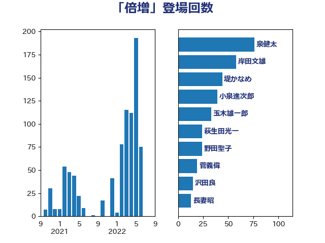

単語「倍増」

| 泉健太 | 立憲民主党 | 76 回 |
| 岸田文雄 | 自由民主党 | 58 回 |
| 堤かなめ | 立憲民主党 | 44 回 |
| 小泉進次郎 | 自由民主党 | 39 回 |
| 玉木雄一郎 | 国民民主党 | 33 回 |
| 萩生田光一 | 自由民主党 | 24 回 |
| 野田聖子 | 自由民主党 | 24 回 |
| 菅義偉 | 自由民主党 | 19 回 |
| 沢田良 | 日本維新の会 | 15 回 |
| 長妻昭 | 立憲民主党 | 13 回 |
| 足立康史 | 日本維新の会 | 11 回 |
| 藤田文武 | 日本維新の会 | 10 回 |
| 城井崇 | 立憲民主党 | 9 回 |
| 勝部賢志 | 立憲民主党 | 8 回 |
| 小沼巧 | 立憲民主党 | 8 回 |
| 馬場伸幸 | 日本維新の会 | 8 回 |
| 山井和則 | 立憲民主党 | 7 回 |
| 斎藤アレックス | 国民民主党 | 7 回 |
| 西村康稔 | 自由民主党 | 7 回 |
| 中谷一馬 | 立憲民主党 | 6 回 |
| 坂本哲志 | 自由民主党 | 6 回 |
| 早稲田ゆき | 立憲民主党 | 6 回 |
| 自見はなこ | 自由民主党 | 6 回 |
| 重徳和彦 | 立憲民主党 | 6 回 |
| 三木圭恵 | 日本維新の会 | 5 回 |
| 今枝宗一郎 | 自由民主党 | 5 回 |
| 倉林明子 | 日本共産党 | 5 回 |
| 小倉將信 | 自由民主党 | 5 回 |
| 川合孝典 | 国民民主党 | 5 回 |
| 礒崎哲史 | 国民民主党 | 5 回 |
| 笠井亮 | 日本共産党 | 5 回 |
| 野上浩太郎 | 自由民主党 | 5 回 |
| 伊藤孝恵 | 国民民主党 | 4 回 |
| 古川元久 | 国民民主党 | 4 回 |
| 吉田統彦 | 立憲民主党 | 4 回 |
| 塩川鉄也 | 日本共産党 | 4 回 |
| 宮本徹 | 日本共産党 | 4 回 |
| 山口壯 | 自由民主党 | 4 回 |
| 後藤茂之 | 自由民主党 | 4 回 |
| 柚木道義 | 立憲民主党 | 4 回 |
| 森山浩行 | 立憲民主党 | 4 回 |
| 池畑浩太朗 | 日本維新の会 | 4 回 |
| 熊谷裕人 | 立憲民主党 | 4 回 |
| 田村まみ | 国民民主党 | 4 回 |
| 田村憲久 | 自由民主党 | 4 回 |
| 田村智子 | 日本共産党 | 4 回 |
| 石橋通宏 | 立憲民主党 | 4 回 |
| 紙智子 | 日本共産党 | 4 回 |
| 蓮舫 | 立憲民主党 | 4 回 |
| 西岡秀子 | 国民民主党 | 4 回 |
| 鈴木俊一 | 自由民主党 | 4 回 |
| 音喜多駿 | 日本維新の会 | 4 回 |
| 伊波洋一 | 無所属 | 3 回 |
| 大岡敏孝 | 自由民主党 | 3 回 |
| 山際大志郎 | 自由民主党 | 3 回 |
| 田村貴昭 | 日本共産党 | 3 回 |
| 福山哲郎 | 立憲民主党 | 3 回 |
| 笹川博義 | 自由民主党 | 3 回 |
| 高木啓 | 自由民主党 | 3 回 |
| 高橋光男 | 公明党 | 3 回 |
| 世耕弘成 | 自由民主党 | 2 回 |
| 中島克仁 | 立憲民主党 | 2 回 |
| 中谷真一 | 自由民主党 | 2 回 |
| 中野洋昌 | 公明党 | 2 回 |
| 伊佐進一 | 公明党 | 2 回 |
| 堀場幸子 | 日本維新の会 | 2 回 |
| 大石あきこ | れいわ新選組 | 2 回 |
| 太田房江 | 自由民主党 | 2 回 |
| 山添拓 | 日本共産党 | 2 回 |
| 岡本あき子 | 立憲民主党 | 2 回 |
| 岡本三成 | 公明党 | 2 回 |
| 岩渕友 | 日本共産党 | 2 回 |
| 杉本和巳 | 日本維新の会 | 2 回 |
| 梅村みずほ | 日本維新の会 | 2 回 |
| 櫻井周 | 立憲民主党 | 2 回 |
| 河西宏一 | 公明党 | 2 回 |
| 浅野哲 | 国民民主党 | 2 回 |
| 浜田聡 | NHK党 | 2 回 |
| 漆間譲司 | 日本維新の会 | 2 回 |
| 牧原秀樹 | 自由民主党 | 2 回 |
| 猪口邦子 | 自由民主党 | 2 回 |
| 稲津久 | 公明党 | 2 回 |
| 穀田恵二 | 日本共産党 | 2 回 |
| 空本誠喜 | 日本維新の会 | 2 回 |
| 舟山康江 | 国民民主党 | 2 回 |
| 藤巻健太 | 日本維新の会 | 2 回 |
| 赤木正幸 | 日本維新の会 | 2 回 |
| 足立敏之 | 自由民主党 | 2 回 |
| 道下大樹 | 立憲民主党 | 2 回 |
| 阿部司 | 日本維新の会 | 2 回 |
| 青木愛 | 立憲民主党 | 2 回 |
| 須藤元気 | 無所属 | 2 回 |
| 高橋千鶴子 | 日本共産党 | 2 回 |
| ながえ孝子 | 無所属 | 1 回 |
| 一谷勇一郎 | 日本維新の会 | 1 回 |
| 三浦信祐 | 公明党 | 1 回 |
| 下条みつ | 立憲民主党 | 1 回 |
| 串田誠一 | 日本維新の会 | 1 回 |
| 五十嵐清 | 自由民主党 | 1 回 |
| 勝俣孝明 | 自由民主党 | 1 回 |
| 吉川元 | 立憲民主党 | 1 回 |
| 和田義明 | 自由民主党 | 1 回 |
| 國重徹 | 公明党 | 1 回 |
| 堂故茂 | 自由民主党 | 1 回 |
| 大西健介 | 立憲民主党 | 1 回 |
| 宮崎雅夫 | 自由民主党 | 1 回 |
| 寺田学 | 立憲民主党 | 1 回 |
| 小山展弘 | 立憲民主党 | 1 回 |
| 小川淳也 | 立憲民主党 | 1 回 |
| 小林史明 | 自由民主党 | 1 回 |
| 小西洋之 | 立憲民主党 | 1 回 |
| 山下貴司 | 自由民主党 | 1 回 |
| 山口那津男 | 公明党 | 1 回 |
| 山岡達丸 | 立憲民主党 | 1 回 |
| 山崎正恭 | 公明党 | 1 回 |
| 岬麻紀 | 日本維新の会 | 1 回 |
| 岸真紀子 | 立憲民主党 | 1 回 |
| 島尻安伊子 | 自由民主党 | 1 回 |
| 市村浩一郎 | 日本維新の会 | 1 回 |
| 徳永エリ | 立憲民主党 | 1 回 |
| 有村治子 | 自由民主党 | 1 回 |
| 末松信介 | 自由民主党 | 1 回 |
| 末松義規 | 立憲民主党 | 1 回 |
| 本村伸子 | 日本共産党 | 1 回 |
| 村井英樹 | 自由民主党 | 1 回 |
| 枝野幸男 | 立憲民主党 | 1 回 |
| 柳ヶ瀬裕文 | 日本維新の会 | 1 回 |
| 柴田巧 | 日本維新の会 | 1 回 |
| 梶山弘志 | 自由民主党 | 1 回 |
| 櫛渕万里 | れいわ新選組 | 1 回 |
| 武見敬三 | 自由民主党 | 1 回 |
| 江田憲司 | 立憲民主党 | 1 回 |
| 河野太郎 | 自由民主党 | 1 回 |
| 浦野靖人 | 日本維新の会 | 1 回 |
| 源馬謙太郎 | 立憲民主党 | 1 回 |
| 片山さつき | 自由民主党 | 1 回 |
| 田中健 | 国民民主党 | 1 回 |
| 田名部匡代 | 立憲民主党 | 1 回 |
| 石井正弘 | 自由民主党 | 1 回 |
| 福島伸享 | 無所属 | 1 回 |
| 福田昭夫 | 立憲民主党 | 1 回 |
| 篠原豪 | 立憲民主党 | 1 回 |
| 舩後靖彦 | れいわ新選組 | 1 回 |
| 若宮健嗣 | 自由民主党 | 1 回 |
| 茂木敏充 | 自由民主党 | 1 回 |
| 赤澤亮正 | 自由民主党 | 1 回 |
| 赤羽一嘉 | 公明党 | 1 回 |
| 逢坂誠二 | 立憲民主党 | 1 回 |
| 遠藤敬 | 日本維新の会 | 1 回 |
| 野間健 | 立憲民主党 | 1 回 |
| 金村龍那 | 日本維新の会 | 1 回 |
| 鈴木英敬 | 自由民主党 | 1 回 |
| 長友慎治 | 国民民主党 | 1 回 |
| 長坂康正 | 自由民主党 | 1 回 |
| 階猛 | 立憲民主党 | 1 回 |
| 高野光二郎 | 自由民主党 | 1 回 |